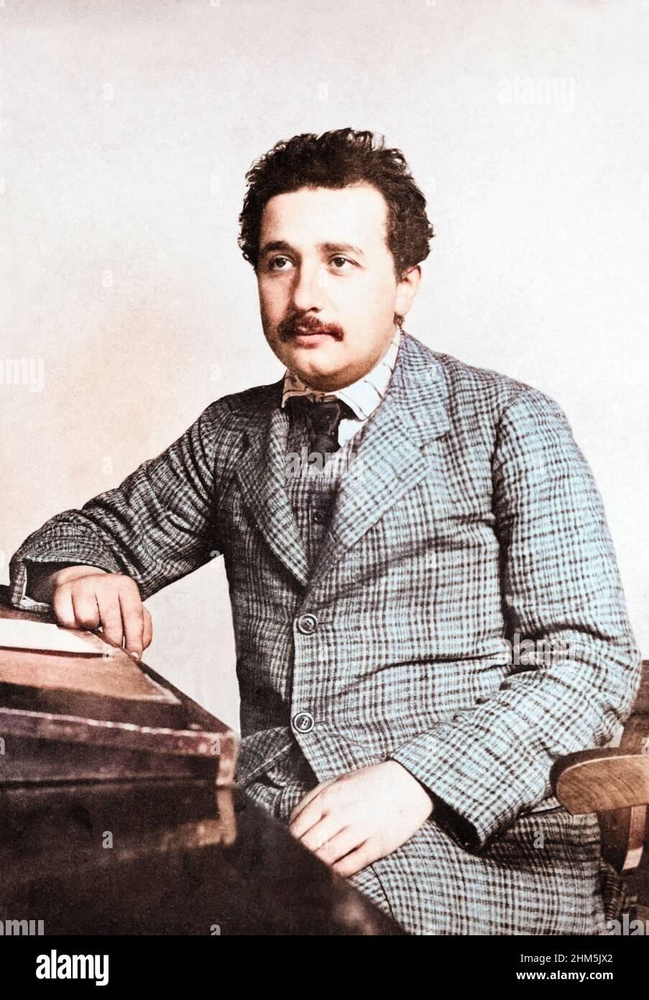
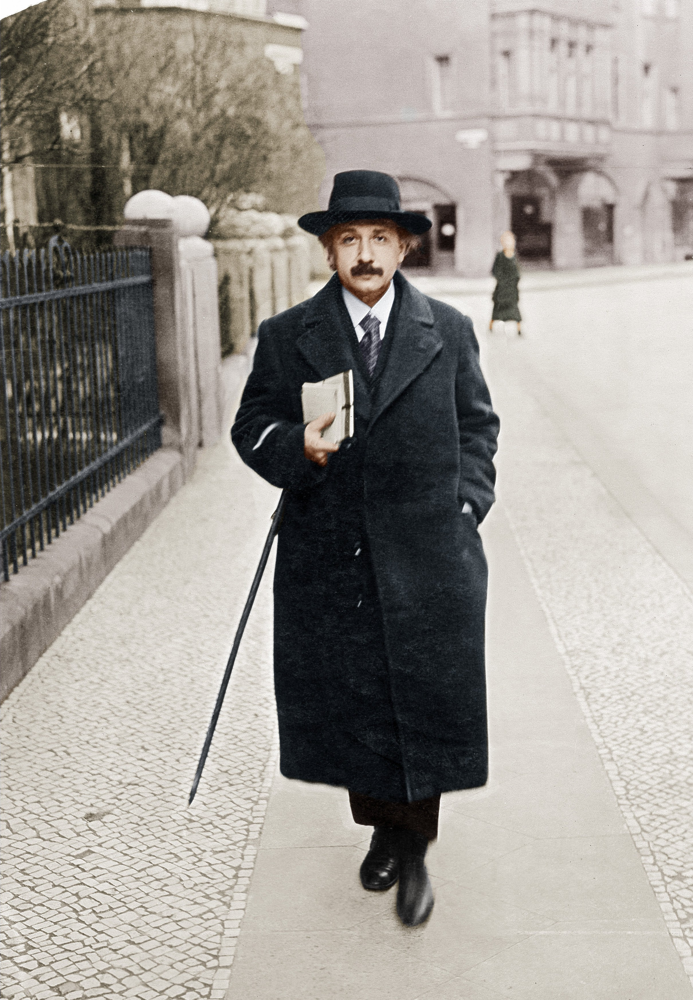
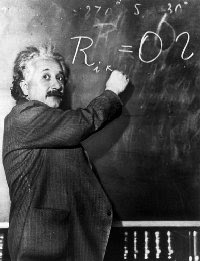
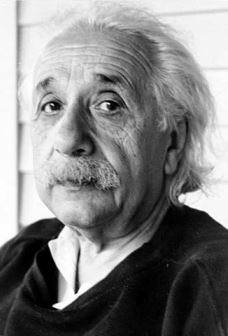
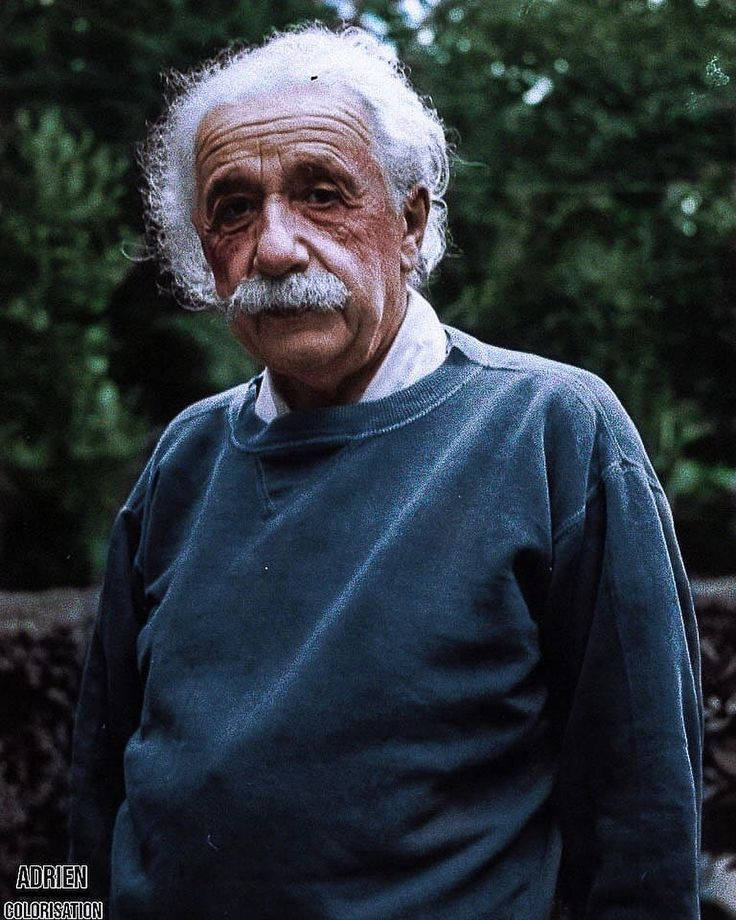
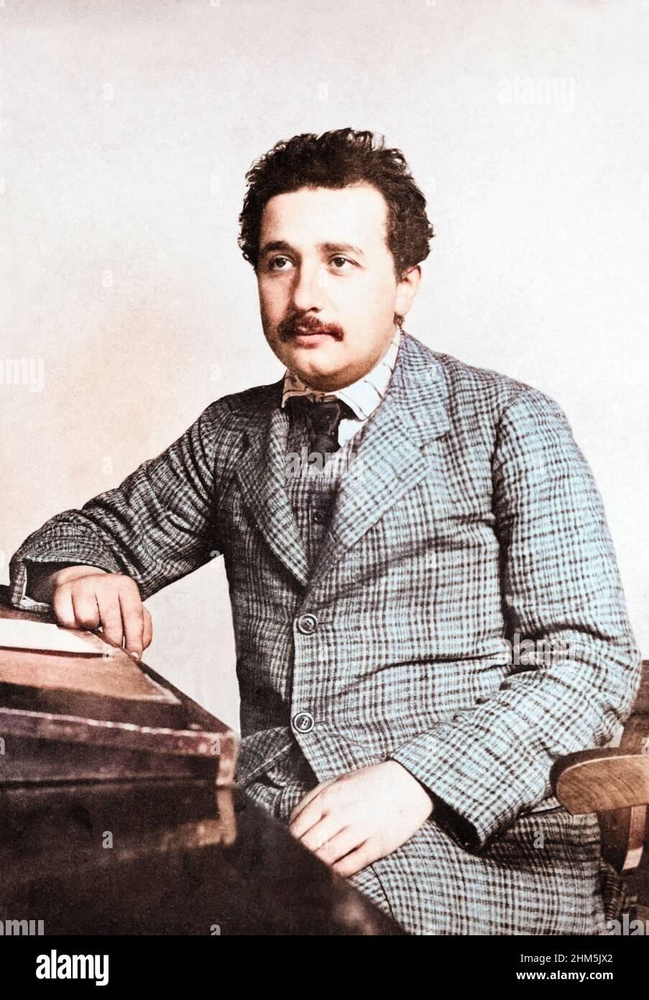
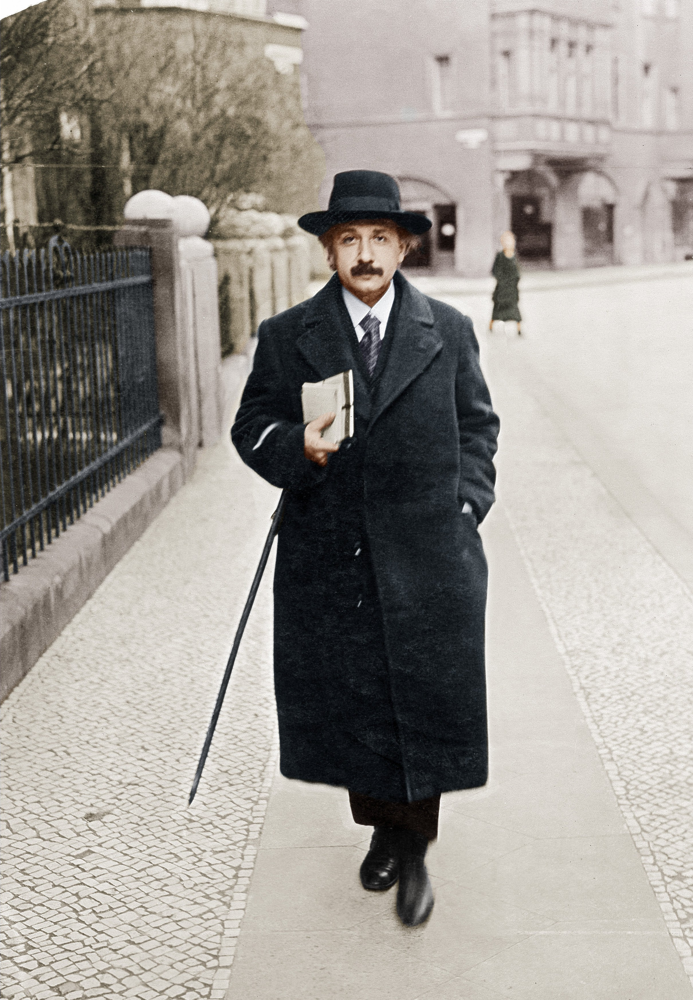
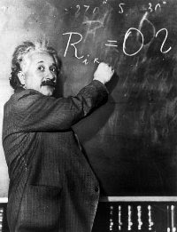
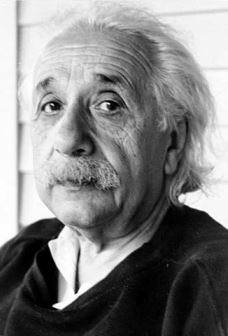
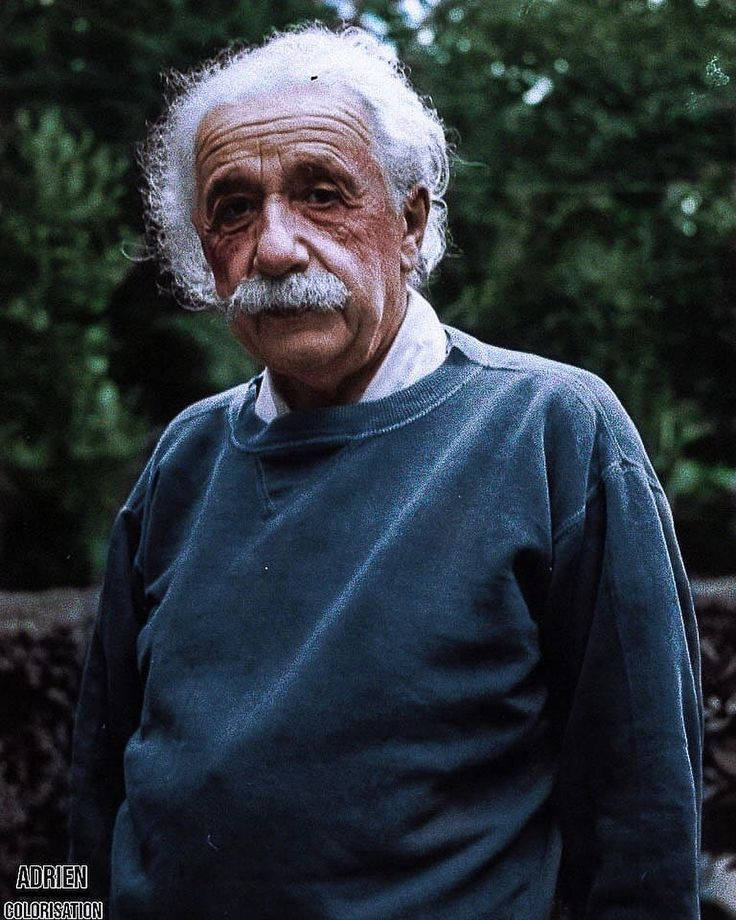

Albert Einstein
About Me
- I am Albert Einstein, a theoretical physicist renowned for my contributions to the understanding of the universe, particularly through my development of the theory of relativity.
- In 1921, I was honored with the Nobel Prize in Physics for my explanation of the photoelectric effect, a critical milestone that helped shape the field of quantum theory.
- My most famous equation, E=mc², illustrates the equivalence of mass and energy, fundamentally changing the way we perceive physical laws.
- Throughout my life, I have been an advocate for civil rights and global disarmament, believing in the importance of using science for the betterment of humanity.
- If you wish to learn more about my life and work, please visit my Wikipedia page.
Image Gallery
 









Papers Published
On the Electrodynamics of Moving Bodies (1905)
In this groundbreaking paper, I introduced the special theory of relativity, fundamentally changing the understanding of space and time.
Does the Inertia of a Body Depend Upon Its Energy Content? (1905)
This paper presents the famous equation E=mc², which establishes the equivalence of mass and energy.
The Foundation of the General Theory of Relativity (1916)
In this work, I expanded upon my earlier theories, proposing a new framework for understanding gravity as a curvature of spacetime.
Hobbies
I enjoy exploring a variety of hobbies, including:
- Reading books on science and philosophy
- Playing chess
- Experimenting with physics and math concepts
- Spending time in nature
- Listening to classical music
Blogs
Explore my thoughts and insights on various topics through my blog. Here are some of the latest posts: